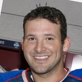

“When you’re in coach (Rick Carlisle’s) system the (center position) has a great roll presence, a great rim presence on both ends. “And there’s obviously not a lot (of centers) that are better at that – he might even be the best at that in the league. He’s a runner, he’s a rim protector, he’s a roller, he finishes as high above the rim as anyone, so we’re really looking forward to start working with him.”
What NBA players and coaches have said about Rick Carlisle
31 quotes about Rick Carlisle from 26 players, coaches and executives, newest first. Each one links to its original source.
Best quotes
“He’s been in our face since Day One. And it’s all about learning. He just wants us to get better. Some coaches let young guards get their way. Rick is tough. But he’s not tough to the point where you can’t handle situations. “Then again, you got to have tough skin to play under a guy like Rick Carlisle. Most NBA players, they don’t like to hear criticism. They don’t like to hear the truth. But if you’re trying to get better, that’s what you got to hear.”
Vincent Goodwill:Fred Hoiberg on Rick Carlisle’s words:
“I think it’s great. Rick as the president of the coaches association, sticking up for a fellow coach. Knowing Luke Walton... I think he’s a hell of a coach and he’s doing a great job.”
What Rick Carlisle has said about other players and coaches →
Quotes per season
Who talks about Rick Carlisle most
 Dirk Nowitzki on Rick Carlisle4 quotes
Dirk Nowitzki on Rick Carlisle4 quotes Nerlens Noel on Rick Carlisle2 quotes
Nerlens Noel on Rick Carlisle2 quotes Rajon Rondo on Rick Carlisle2 quotes
Rajon Rondo on Rick Carlisle2 quotes Brendan Haywood1 quote
Brendan Haywood1 quote- Byron Scott1 quote
 Chandler Parsons1 quote
Chandler Parsons1 quote Chris Kaman1 quote
Chris Kaman1 quote Danny Ainge1 quote
Danny Ainge1 quote Darren Collison1 quote
Darren Collison1 quote Doc Rivers1 quote
Doc Rivers1 quote Fred Hoiberg1 quote
Fred Hoiberg1 quote George Karl1 quote
George Karl1 quote
Back and forth
 Rick Carlisle and Kristaps Porzingis19 quotes
Rick Carlisle and Kristaps Porzingis19 quotes- Rick Carlisle and Dirk Nowitzki18 quotes
- Rick Carlisle and Rajon Rondo17 quotes
 Rick Carlisle and Tyrese Haliburton13 quotes
Rick Carlisle and Tyrese Haliburton13 quotes Rick Carlisle and Harrison Barnes7 quotes
Rick Carlisle and Harrison Barnes7 quotes- Rick Carlisle and Mark Cuban7 quotes
 Rick Carlisle and LeBron James6 quotes
Rick Carlisle and LeBron James6 quotes- Rick Carlisle and Chandler Parsons6 quotes
- Rick Carlisle and Nerlens Noel5 quotes

Rick Carlisle and Tony Romo4 quotes- Rick Carlisle and Kevin Pritchard3 quotes
 Rick Carlisle and Jason Terry3 quotes
Rick Carlisle and Jason Terry3 quotes
2024-25
2 quotesTyrese Haliburton on Rick Carlisle:
“Yeah, I think he is a very super serious person. I try to joke as much as I can to get him to crack a smile or laugh from time to time. During playoff time, it’s hard. If I can get him to smile or laugh during the playoffs, it’s a pretty special moment for me—it’s something I cherish. He’s the guy who’s always setting the tone with his sternness and seriousness. And I feel like it’s kind of my job—you know, I’m the point guard—so I’ve got to be the coach on the floor to share that messaging. But at the same time, I’ve got to keep everybody loose and having fun. Let them know: it’s just basketball. So let’s just go out there and hoop.”
Dustin Dopirak:Mark Daigneault on Rick Carlisle:
“He's forgotten more about the NBA than anyone else knows in the first place.”
2023-24
1 quote“Threw my name in the NBA draft -- averaged 6 and 6, and yeah, went number 12, bro... I was just there for the ride. I had no expectations of even making the NBA.[Rick] Carlisle was the only one brutally honest with me, 'You average 6 and 6, why'd you come out of college,'”
2022-23
2 quotes“Rick Carlisle (the Pacers’ coach and the president of the NBA Coaches Association) does a nice job of keeping my spirits up,”
Pritchard told Fieldhouse Files.
“But look, Larry is a good friend of mine and he’s a good friend of Rick’s (Carlisle). At any time we need help, we know where to look. He’s always available.”
2020-21
1 quoteDwain Price:Brendan Haywood on the Mavs' future:
“They have one of the best owners. They have a very good front office who are going to put good players around you. They have one of the best coaches in the league in Rick Carlisle, and they have two of the best young players in the league.”
2019-20
2 quotesPorzingis on his talks with Carlisle:
“I also tell him, 'I’ve got to be better, I've got to play better.' It's not only the position that I’m in, I've got to be more effective and more consistent. I’ve had some good games and not so good. I'm looking forward to bouncing back.”
While laughing,Doc Rivers on playing against Carlisle:
“Actually, he was never hard to play against when I was a player. That was very easy.”
2018-19
1 quote“When you’re in coach (Rick Carlisle’s) system the (center position) has a great roll presence, a great rim presence on both ends. “And there’s obviously not a lot (of centers) that are better at that – he might even be the best at that in the league. He’s a runner, he’s a rim protector, he’s a roller, he finishes as high above the rim as anyone, so we’re really looking forward to start working with him.”
2017-18
3 quotes“Coach Carlisle is a good guy and a family man. He definitely understands me like I understand him. We’ve never had any type of conflict because at the end of the day we really understand each other for the most part,”
Vincent Goodwill:Fred Hoiberg on Rick Carlisle’s words:
“I think it’s great. Rick as the president of the coaches association, sticking up for a fellow coach. Knowing Luke Walton... I think he’s a hell of a coach and he’s doing a great job.”
“I don't see it because I don't look at it. I heard about it. Everybody's heard about it. To be honest with you, one word (about Ball's comments) is too many. I'm glad (Carlisle) did what he did, he represented the coaches. Luke does a great job in Los Angeles.”
2016-17
6 quotes“I’ll be around for a while, and I’m sure we’ll meet with Mark and with Donnie. You know, [Mavs coach Rick Carlisle] will be here and even [leading scorer Harrison Barnes], and we’ll just see how we can help and how we can make this better. Maybe I’ll be in the draft room this year, if that’s what it takes. …I think we’ve got plenty of time over the next few weeks to set a plan, execute the plan on draft day hopefully and maybe in free agency, and we’ll go from there.”
Earl K. Sneed:Nerlens Noel:
“I think this is a big offseason for me. I'll be looking to spend a lot of time with coach Carlisle.”
Dwain Price:Tony Romo on Carlisle:
“It’ll be great to sit out here and yell at him a little bit about some of the play calls he makes tonight.”
Dwain Price:Harrison Barnes on Rick Carlisle missing practice:
“Im sure he’ll watch practice on the cameras and have some comments tomorrow. He’s never out of reach.”
Dwain Price:Melvin Hunt on coaching today for Rick Carlisle:
“I do not feel like a substitute teacher at all. They didn’t throw boogers at me and snot balls.”
Melvin Hunt on Rick CarlisleTwitter @DwainPrice
Sirius XM NBA:Justin Anderson on Rick Carlisle giving him playing time:
“He saw I was always ready to play within the system. He saw my approach in practice.”
2015-16
6 quotesCalvin Watkins:Jason Terry on Rick Carlisle:
“Rick is a mastermind, a great ping pong player but also a chess player.”
“I actually put a bug in [Rick Carlisle's] ear a couple of times in the last couple of weeks about getting him more playing time.”
Metta World Peace:
“The triangle [offense] is hard. It’s not easy. But there’s things you can implement. Everybody does that. Golden State and San Antonio does that. Golden State has Steve Kerr and they run a little bit of triangle. The Spurs run a little bit. [Gregg] Popovich reminds me of Phil and [Rick] Carlisle. He dictates a lot [of plays], but then he lets you go. Carlisle has his own style. Popovich has his own style. But he reminds me of Phil and Carlisle together.”
Tim McMahon:Rajon Rondo on interrupting Rick Carlisle's huddle w/ Deron Williams:
“He just told me to get the f--- out of here. I’ve heard that before.”
Dwain Price:Dirk Nowitzki on Rick Carlisle:
“He’ been the man here ever since he got here. He’s a great X’s and O’s guy.”
Dwain Price:Dirk Nowitzki on Rick Carlisle:
“He’s great at making adjustments in series and during games. He’s obviously the right guy for this job.”
2014-15
5 quotesBaxter Holmes:B. Scott on Rondo-Carlisle blow-up:
“When I saw it, I was like, whoa. That was different. Neither guy looked like they wanted to back down.”
Brian Robb:Ainge on Rondo-Carlisle incident:
“I know that Rondo is an emotional guy and feisty. None of it really surprises me.”
Dwain Price:Rondo on Carlisle:
“I like his honesty. He’s pretty straight forward. Rick and I have been talking non-stop daily, (sending) text messages.”
Dwain Price:LeBron James:
“If it's not the top 3 or 4 best offenses in the league, then you don't get any better than Rick Carlisle's offense.”
Earl K. Sneed:Parsons on Carlisle:
“He came to me as a man, and we have a great relationship. It's in the past, and we're going to move forward.”
2013-14
1 quote“Coach Carlisle is uptight and kind of plays games with people here and there. Coach D'Antoni is more relaxed. He lets guys get a feel and make mistakes and play. That's the kind of basketball players like to play. You can't micromanage every situation and pull a guy in and out and in and out. It just doesn't work that way. If you have some superstars, you might get away with that. But if you have guys who aren't superstars, it's hard to do that.”
2012-13
1 quote“He’s been in our face since Day One. And it’s all about learning. He just wants us to get better. Some coaches let young guards get their way. Rick is tough. But he’s not tough to the point where you can’t handle situations. “Then again, you got to have tough skin to play under a guy like Rick Carlisle. Most NBA players, they don’t like to hear criticism. They don’t like to hear the truth. But if you’re trying to get better, that’s what you got to hear.”